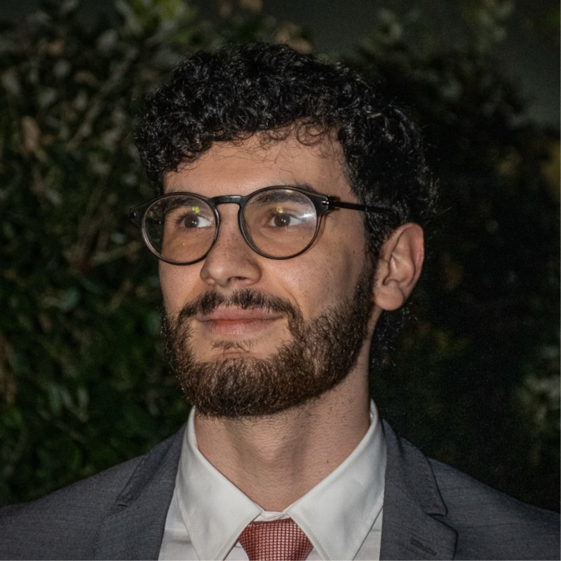

Electrical and Computer Engineering Master's graduate from the University of Coimbra, specializing in Robotics, Control, and AI. Experience developing predictive maintenance systems, industrial signal processing, and dynamic control in collaboration with industry partners. Fluent in English, native Portuguese, and currently learning German.
Developing predictive maintenance frameworks using advanced vibration signal processing and AI algorithms to detect and classify early-stage electrical motor failures in industrial operating environments.
Contributing to advanced industrial process control and predictive maintenance architectures designed to optimize the operating performance and thermal efficiency of biomass incineration plants.
Planned and delivered practical robotics, mechatronics, and logic programming workshops for students aged 6 to 14. Mentored students through mechanical assembly, sensor integration, and weekly algorithmic problem-solving challenges.
Conducted digital literacy courses promoting technological inclusion for seniors. Adapted complex technical concepts into accessible lessons on basic computing, internet navigation, and cybersecurity, demonstrating strong patience and tailored communication.
Executed high-precision 2D technical drawings and engineering schematics using AutoCAD. Interpreted complex architectural blueprints and ensured rigorous geometric compliance across diverse construction and specialty projects.
In the context of Industry 4.0, predictive maintenance plays a fundamental role to ensuring the operational reliability of such critical assets as electrical motors, since faults on these machines can halt production lines and consequently lead to significant economic losses. This study explores the challenges of an autonomous condition monitoring framework using vibration analysis, progressively addressing the limitations of conventional diagnostic techniques. The work begins with the mathematical formulation for integration in the Frequency Domain, in order to extract the velocity and displacement signals from the raw acceleration signal. Traditional methods for detection, such as the ISO 20816-1 standard and spectra comparison were tested and evaluated on their robustness, as well as diagnostic techniques based on signal processing. To eliminate the need for manual inspections and expert knowledge, Artificial intelligence (AI) based algorithms were implemented, comparing traditional Machine Learning (ML) models, utilizing statistical and spectral features, to state-of-the-art 1D Deep Learning (DL) architectures. Experimental results establish DL models as the superior approach compared to the traditional ML, achieving 100% accuracy for clean signals and close to 99.5% for artificially noised signals. These models present an inference time lower than the acquisition time and reduced memory overhead, exhibiting the viability for real-time execution on industrial microcontrollers. Therefore, by means of this approach, it is possible to transition from reactive maintenance to autonomous predictive maintenance, offering a scalable solution for monitoring the integrity of the assets in real time through Edge AI.
Engineered an automated end-to-end perception system for drone-captured roundabout footage. Fine-tuned YOLOv8s on aerial imagery (RAIVD) to achieve 0.892 mAP50-95, integrated ByteTrack for persistent multi-object tracking, and implemented polygon-based spatial analysis (Shapely) with an automated dashboard rendering trajectory counts, waiting times, and gate flows in real time.
Derived the nonlinear dynamic equations of motion for an inverted pendulum robot on wheels and linearized the system around the upright equilibrium. Designed and tuned a discrete Linear Quadratic Regulator (LQR) in MATLAB/Simulink, implemented sensor fusion via a Complementary Filter (accelerometer + gyroscope), and successfully deployed the closed-loop controller onto physical MinSeg hardware for real-time stabilization and linear trajectory tracking.
Designed, built, and programmed a 3-DOF mechatronic arm to emulate natural drumming biomechanics. Implemented cubic and quintic polynomial trajectory interpolation on an Arduino UNO to generate smooth joint motions (elbow swing and wrist whip), paired with an interactive CustomTkinter Python GUI for real-time serial parameter tuning (BPM, volume, and stroke styles). Validated temporal accuracy within 30 ms via audio peak analysis.
Specialized cycle focused on mobile robotics, robotic manipulators and arm kinematics, advanced control systems, Machine Learning and Deep Learning architectures, classical and deep computer vision, and industrial automation pipelines (EQF Level 7).
Rigorous foundation in mathematics (calculus, linear algebra, differential equations) and physics (mechanics, electromagnetism), combined with core engineering topics in automatic control, signals and systems, electronics, programming, and introductory automation.